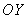
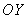
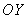
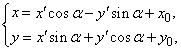
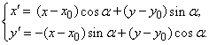

6.4.3. Изменение начала координат и поворот осей
Если оси декартовой прямоугольной системы переносятся
параллельно на величины  по оси
по оси  и на
и на  по
оси  и, кроме того, поворачиваются на
угол
по
оси  и, кроме того, поворачиваются на
угол  , то этому изменению системы
соответствуют формулы преобразования координат, выражающие старые координаты через
новые:
, то этому изменению системы
соответствуют формулы преобразования координат, выражающие старые координаты через
новые:
по оси и на по
оси  и, кроме того, поворачиваются на
угол , то этому изменению системы
соответствуют формулы преобразования координат, выражающие старые координаты через
новые:

Выражение старых
координат (x,y) произвольной точки М через новые
координаты (x¢,y¢) этой же точки при повороте осей на
угол a и
параллельном их переносе в точку (x0,y0)
(4)
и новые координаты через старые:

Выражение новых
координат (x¢,y¢) произвольной точки М через
старые координаты (x,y)
этой же точки при повороте осей на угол a
и параллельном их переносе в точку (x0,y0).
(5)